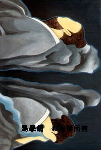
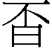
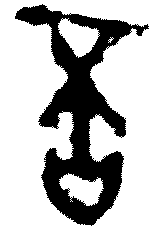
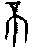
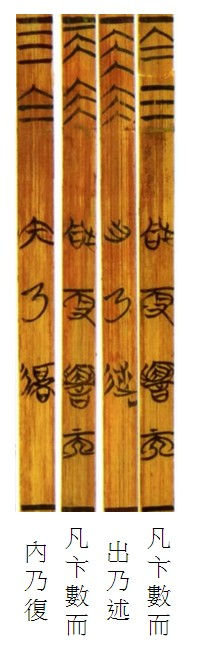
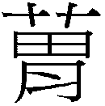

12  否卦 天地否
否卦 天地否
否之匪人，不利君子貞，大往小來。初六，拔茅茹，以其彙，貞吉，亨。六二，包承，小人吉，大人否亨。六三，包羞。九四，有命无咎，疇離祉。九五，休否，大人吉。其亡其亡，繫于苞桑。上九，傾否，先否後喜。
【卦名】
今本：否 帛書：婦 歸藏：否 秦簡： 清華簡：啚 海昏：負
否為閉塞不通，帛書作「婦」，意味這是屬於婦女之卦。清華簡作「啚」，則是吝嗇之義。
否、、不
《說文》：「否，不也，從口從不。」徐鍇：「不可之意見於言，故从口。」依徐鎧之說，否為以言語表達出不同意，即否定、否決之義。
「否」字甲骨文未見，從金文才有，首見於西周末毛公鼎，作。推理「否」應當源自於「不」字。甲骨文不、丕、否通用，都作「不」。因此否可視為文字發展過程當中從「不」字繁化演變而來。現代出土的楚簡中，可見許多文字如此的繁化演變，如清華簡中竺字多一土字邊，复和旅多一辵字邊或彳字邊，而震卦則下方多一口或日。不字下多一口即否，若加日即秦簡中的。秦簡的可視為否的異體字。
《說文》：「不，鳥飛上翔不下來也。从一，一猶天也。象形。」依許慎，「不」字是象鳥往上飛不下來，這個說法受到現代許多古文字學者的否定。甲骨文中「不」作，但解釋相當歧異。學者或認為象植物生長受阻無法破土而出，下三畫為植物發育期之根部，上面一橫為地面。或者認為是象花苞無法形成，相較之下「帝」（蒂）則是花苞得以形成。或認為這是象殘蕊萎敗之狀。總合來說，無論那一種解釋，「不」的造字都有生長受到阻礙之意味。
《周易》則以否為閉塞不通的意思，如《彖傳》說「天地不交而萬物不通也」，《序卦傳》說「物不可以終通，故受之以否」，此與「不」字的甲骨文造字意思相符。
啚、鄙、嗇
清華簡《別卦》卦名作「啚」，「啚」為「鄙」的古字，卑鄙或吝嗇之義。亦通歰（澀），不滑順之義。
《說文》：「啚，嗇也。」「嗇，愛瀒也。从來从㐭，來者㐭而藏之，故田夫謂之嗇夫。」段注：「水部曰：濇，不滑也。凡鄙吝字當作此，鄙行而啚廢矣。《論語》鄙夫、《周書》鄙我周邦，皆當作此。」「嗇濇疊韵，《廣韵》引作歰。歰與濇皆不滑也。」「嗇者多入而少出，如田夫之務蓋藏，故以來㐭會意。」
依《說文》，啚通嗇，嗇字從來從㐭，㐭即廩（倉廩）之古字，意思是凡進來的就將他藏起來，所以現在我們形容一個人對於財物只進不出，只納藏而不付出，就是「吝嗇」。「嗇夫」通常用以指「田夫」，因為他們會將作物收藏起來。
依段注，啚為鄙的本字，即鄙吝之鄙，後來鄙字流行之後啚字就沒人在用。嗇濇疊韻，啚亦同於嗇與歰，嗇與歰都是「不滑」的意思，也就是「泰」的相反。《說文》：「泰，滑也。」
泰本義為滑，而啚為不滑。泰引申為通達，而啚為吝嗇，即不通達。與泰卦比對之後，「啚」字似乎比現今的「否」字更像是古卦名的「本尊」，這或許可以用以解釋為何現在「否」卦都讀作「鄙」而不是「缶」。
段注「嗇者多入而少出」，就卦象來說，本卦為坤在內乾在外，坤為多，乾為寡，即「多入少出」之象，此亦為啚（嗇）的字義。而這個取象，還具有比《周易》更早的傳統。
清華簡中有「數出」及「數內」之象，第四節〈更〉：「凡更，數而出，乃述。」「凡更，數而內，乃復。」意思是說，若是問更都之事，得「數出」之象則遷都順遂，「數內」（數入）之象則無法遷都。與《周易》上下二體不一樣的是，清華簡看卦象有「四位」法。但與《周易》一樣的是，它的「四位」也有內外之位。乾在右下（室內），坤在左上（外之位），即為「數出」之象，為事情順遂，相當於《周易》的泰卦，遷都將順遂。如果是坤在右下（內），乾在左上（外），即為「數內」，代表不能遷都，相當於《周易》的啚（否）卦，閉塞不通。
再比對「啚」（嗇）「多入少出」字義，其實就是「數內」之象。數者眾也多也，「內」者，即納入也。
婦
帛書本卦名作婦，學者多數認為婦為否之假藉，應解釋作「否」。
實則帛本很清楚的「婦」即做「婦」解釋，不當做「否」，因帛書「婦」卦經文中也多次出現「不」（否），其用法顯然「婦」與「不」有清楚的區別，以兩個不同的字義在使用。
例如卦辭說「婦之非人，不利君子貞」今本作「否之匪人，不利君子貞」，上九爻辭「頃婦，先不後喜」今本作「傾否，先否後喜。」
另一方面，除否卦之外，今本《周易》其他作「婦」者帛本亦同樣做「婦」，今本為「否」者帛本則皆作「不」，這也是帛本婦、不有別，不能混而為一的證據。例如蒙九二「納婦吉」、大過九五「老婦得其士夫」、恒六五「婦人吉」，家人九三「婦子嘻嘻」、漸九三「婦孕不育」、九五「婦三歲不孕」、既濟六二「婦喪其茀」，這些爻的「婦」字帛本亦皆作婦。師初六「否臧」、遯九四「小人否」、鼎初六「利出否」中的「否」字帛本皆作「不」。
甲骨文中婦、歸、帚同源，皆作帚，泰卦六五「帝乙歸妹」，即在隱喻泰極而轉婦，因女歸之後即成婦。
泰卦為小往大來，為通泰、寬裕，此為君子之道。否為大往小來，為婦人、小人之道，引申為閉塞不通，此是就君子的立場而言，然就婦人或小人的立場來說，否卦才是讓其自在而快樂之道，因此卦辭只說「不利君子貞」，而初六之陰爻還說「貞吉亨」，六二甚至說「小人吉，大人否亨」。因此以「婦」為卦名，亦有其道理，更能顯其卦義。
負
海昏簡《易占》卦名作負，曰：「負者負也。」
《說文》：「負，恃也，从人守貝，有所恃也。一曰受貸不償。」
清華簡卦名作啚，通鄙，《釋名》：「鄙，否也。小邑不能遠通也。」鄙有邊鄙、邊防之義，似乎也通負恃的注解。
《史記‧高祖本紀》：「常從王媼、武負貰酒。」《漢書》註：「如淳曰：俗謂老大母為阿負。師古曰：古語謂老母為負耳。 」負在古代似乎意思為老婦或老母，通婦。
【卦義】
閉塞不通，溝通不良。吝嗇簡約，婦人之道。
就卦象來看，否卦為乾天陽氣停留在上，坤地陰氣停留在下，天地陰陽之氣無法交流融和，萬物閉塞不通，政亂而人不和之象。這是君子退散，小人得勢，天下混亂的時候，《象傳》說：「天地不交，否。君子以儉德辟難，不可榮以祿。」
下坤順而外乾健，陰氣回到裡面，陽氣被逼到外面，陰陽不和。內坤為眾，外乾為寡，眾進而寡出，吝嗇簡約之象，此即《象傳》所言「君子以儉德辟難」。
就卦氣來看，泰卦為春天一月建寅之卦，主生，萬物茲長繁茂。否卦則是秋天七月建申之卦，主殺，萬物開始凋零。陽氣從復卦之後開始回來（一元復始），一月泰卦為陰陽最為調和的時候（三陽開泰），四月乾卦是陽氣增長的頂峰，五月姤卦陰爻回來，陰氣開始用事，遯卦陰氣增長，君子開始逃離，到否卦則已是小人當道，陰陽無法交流而天地閉塞。
否卦屬婦女、小人之卦，凡得否卦，不盡然會萬事不順。小事、私密之事，不需與人溝通、閉門造車之事，是可以有所為的。但如果所問之事為公事，大事，那麼恐怕將閉塞不通，要以儉吝之道渡過非常時期。
否之匪人，不利君子貞，大往小來。
- 彖曰：否之匪人，不利君子貞，大往小來，則是天地不交而萬物不通也，上下不交而天下无邦也。內陰而外陽，內柔而外剛，內小人而外君子，小人道長，君子道消也。
- 象曰：天地不交，否。君子以儉德辟難，不可榮以祿。
- 序卦：物不可以終通，故受之以否。物不可以終否，故受之以同人。
- 雜卦：否泰，反其類也。
- 易之義：婦者［陰］陽姦矣，下多陰而紑［閉也］。
【今解】
閉塞不通，慘無人道的時候，不利於君子的正道。君子大人離去，小人回來。
天地閉塞不通的時候，萬物凋零，天下慘無人道，仁人君子的貞正之道完全不可行。君子離去，小人當道。陽為大，比喻君子。陰為小，比喻小人。
帛本作「婦之非人」，娶得的婦人身體殘障。
【字義】
否之匪人：傳統解釋認為這是天下閉塞的時候，沒有人道。否，閉塞不通。匪人即「非人」，意謂不人道，指時局之亂。朱熹：「匪人，謂非人道也。」程頤：「天地不交，則不生萬物，是无人道，故曰匪人，謂非人道也。」《詩經．四月》：「先祖匪人，胡寧忍予？」言先祖過著慘無人道的生活，不然怎麼忍心讓我受難呢。來知德以「匪人」為「天道」，否之匪人，否道乃因天道使然，不是人道所為：「否之匪人者，言否之者非人也，乃天也，即大往小來也。」《莊子‧養生主》公文軒見右師，「知其天也，非人也」，即是此義。帛書作「婦之非人」，意思為所娶之婦身體有殘障。古代以身體有殘障的人為「非人」，此非人之婦即歸妹初九的「歸妹以娣，跛能履」之娣。《左傳》昭公七年記載孔成子筮問立衛靈公的故事，因為「孟縶之足不良，能行」（此即跛能履），史朝向孔成子解釋卦象時說「孟非人也」，「弱足者居，侯主社稷，臨祭祀，奉民人，事鬼神，從會朝，又焉得居。」此可證明古代以「非人」指人之身體有殘障。《禮記‧王制》：「廢疾非人不養者，一人不從政。」對比之下六四「休婦，大人吉」為有婦休美，因此大人吉。朱熹懷疑「之匪人」是衍字：「或疑之匪人三字衍文，由比六三而誤也。《傳》不特解，其義亦可見。」此處應該無衍字的問題，《彖傳》亦引述了「否之匪人」。
不利君子貞：有多種不同讀法，一是五字為完整一句，二是讀為「不利，君子貞」，三是「不利君子，貞」。「不利君子貞」意思是否卦為小人道長，君子道消，正道不可行的時候，不利於君子的貞正（指正道），也就是君子正道不可行。孔穎達、程頤、朱熹採之。來知德讀「不利，君子貞」，意指否卦為萬物閉塞不通的時候，「不利」為整卦的吉凶判斷。「君子貞」，此時君子當退守正道。以來氏讀法，貞亦可解釋為貞定，有退避隱居之意，符合《象傳》所說的「君子以儉德辟難，不可榮以祿」的意思。這兩種解釋各有優劣，於義理也都互通。另外還可讀做「不利君子，貞」，否卦乃不利君子的時候，告誡人此時應當要安定守正。
大往小來：《易經》中凡「大」皆指陽、君子；小則指陰、小人。卦在外為「往」，離去之義；卦在內為「來」，歸來之義。「大往」指三個陽爻離去，喻君子之道消，大人退去，正道不行。「小來」指三個陰爻回來，喻小人、婦女之道長，小人得志。反之，泰卦則是「小往大來」，小人道消，君子道長。蜀才以否卦為自乾卦而來，乾卦下體陽去為大往，陰氣來為小來：「此本乾卦。大往，陽往而消。小來，陰來而息也。 」
君子以儉德辟難，不可榮以祿：居閉塞不通之時，君子當以節儉之德，避開危難，不當追求食祿的榮華。依虞翻注，「榮」作「營」：「巽爲入伏，乾爲遠，艮爲山，體遯象，謂辟難遠遁入山，故不可營以祿。營，或作榮。儉，或作險。」孔穎達：「言君子於此否時，以節儉爲德，辟其危難，不可榮華其身，以居祿位。若據諸侯公卿而言，是辟時群小之難，不可重受官爵也。若據王者言之，謂節儉爲德，辟陰陽厄運之難，不可自重榮貴而驕逸也。」
【春秋筮例】
《國語‧周語下》單襄公論周子將得晉國
晉悼公名周（或作「糾」）又名周子，當時周子在周國時，事奉單襄公，襄公重病時交待他兒子，一定要好好對待周子，因為他認為周子一定會成為晉國的下一任君主。他所持的理由，除了對於周子這個人的觀察，認為這個人具有11項為君的美德之外，還有他所知道的一些占筮和占夢的典故。
單襄公聽說當年晉成公被迎回晉國繼任君位時，晉國筮了一卦，得到乾之否，說是「配而不終，君三出焉」。再加上成公母親夢見成公只能傳位三代，三代之後晉國國君將改由晉襄公驩的子孫接任，因此預測周子一定會是下一位晉國君主。後來果然晉厲公被殺之後，周子被迎回晉國，成為晉悼公。
乾之否是一個三爻變的卦例，依〈重耳筮得晉國〉貞屯悔豫的占例來看，三爻變是同時看本卦和之卦。對照今本乾卦和否卦卦辭，並沒有符合「配而不終，君三出焉」的卦爻辭。而從「君三出焉」這樣的語法來看，不像卦爻辭，比較像是占筮者的自由創作。
〈董因筮重耳返晉〉得泰之八，占曰：「是謂天地配亨，小往大來。」泰卦說「天地配亨」，與泰卦成對而相反的否卦說「配而不終」應該算是有些道理的。泰否兩卦都是天與地相配，差別在於泰卦天地交流而相配，否卦天地配而不交，萬物閉塞，也就是「配而不終」，意指天地雖配在一起，但無法有好的結果。
今本《周易》否卦說「否之匪人，不利君子貞，大往小來」，「大往小來」則近於「君三出焉」。這可以從兩種卦象的理解方式來看。
首先就上下二體來說，大往意指三陽在外。外卦乾為大，內卦坤為小。陽為君，在外即出，那麼三陽在外就是「君三出焉」。
另一種理解方式則可將乾卦納入考察。在十二消息卦中，若從乾卦開始算起，到姤卦為一陰進一陽出，至遯卦為二陰進二陽出，至否卦則為三陰進三陽出，因此「乾之否」就是三陽出，陽為君，因此乾之否為「君三出焉」。
雖然「配而不終，君三出焉」今本《周易》不存，但我們透過易象的探索，可斷定那講的就是否卦。
初六，拔茅茹，以其彙。貞吉，亨。
- 象曰：拔茅貞吉，志在君也。
【今解】
拔茅草的根，一拔就一整串的同類根根相連、牽連而出。貞定則吉而亨通。
傳統註解認為，否卦之所以貞吉，因初爻否道邪惡未成，小人貞正則可成君子。
如王弼：「居否之時，動則入邪，三陰同道，皆不可進。故茅茹以類，貞而不諂，則吉亨。」朱熹「 三陰在下，當否之時，小人連類而進之象，而初之惡則未形也，故戒其貞則吉而亨。蓋能如是，則變而為君子矣。」陳夢雷：「初之惡未形，故許以貞則吉亨，欲其變爲君子也。」
另一看法認為，初六是想要棄暗投明的第一爻，首先發難與上面陽爻相應。一旦首先發難，就有如拔茅草一樣，根根相連而同類群起。一人帶頭，群起而呼應。如來知德：「貞者，上有九五剛健中正之君，三陰能牽連而志在于君則貞矣。蓋否之時，能從乎陽，是小人能從君子，豈不貞。」
此段爻辭與泰卦初九幾乎一樣，但泰初九言「征吉」，為適於出征；此言「貞吉」，為不宜出征，反而應該貞定。這是陰陽之別，因泰初九，陽爻主動；否初六，陰爻主靜。
此比喻人當慎於始，一開始做對了，接下來將成連鎖效應，同類相牽引而出。《象傳》說：「拔茅貞吉，志在君也。」君指與初六相應的九四，陽為君子，故稱君。初六之所以貞吉，是因為坤陰之道以貞定為吉，其志在於與九四相應，順承於乾陽。此坤卦卦辭所說「利牝馬之貞」、「安貞吉」。但程頤則認為，否道為陰陽隔絕不相通的時候，因此上下相應不具意義，志在君意指小人貞固其節，志在於成為君子。
以上為傳統之解釋。此外亦可解釋為：拔茅草做餵馬之草料，取茅草的莖以做草料之用，貞定為吉。
【字義】
拔茅茹，以其彙：拔茅草的根，同類相連一起拔出。茅，茅草。茹有多種解釋，王弼認為是茅草相連之狀：「茹，相牽引之貌也。」虞翻認為是根：「茹，茅根。」《說文》則以茹為餵馬之草料：「飤馬也。」彙，類也，帛本作「胃」或「」。《釋文》：「彙，音胃，類也。」「古文作。」其彙，指同類。「彙」也可解釋作「莖」，則「以其彙」為「以其莖」，意謂拔茅草的根時是從莖部拉起，或者指拔茅草作餵馬之草料，且取茅草之莖以為草料之用。高亨泰卦注曰：「彙有草莖之義…拔茅飲馬必用茅莖者，蓋拔茅則連根，連根則帶土，帶土則馬不食也。拔茅茹以其彙，是養其所需以備取用之象也。」
六二，包承，小人吉，大人否亨。
- 象曰：大人否亨，不亂群也。
【今解】
包容而承順，小人吉，大人則閉塞不亨通。
六二為下卦之中爻，為包。下卦坤三爻承上卦之乾陽，二為下卦之主爻，故於六二曰「承」。《周易》陰下陽上為「承」，陰順於陽，承順之象；反之陰在陽上為「乘」，陰逆於陽，叛逆之象。
蒙卦九二包蒙，虞翻注以坤為包，證諸整本《周易》實在不符。泰九二虞翻注：「在中稱包。」二、五為中爻，在中爻為包，證諸整本易經多數符合。《周易》除否六三「包羞」，姤九四「包无魚」非屬中爻之外，其餘如否六二「包承」、蒙九二「包蒙」、泰九二「包荒」、姤九二「包有魚」、否九五「繫于苞桑」，姤九五「以杞包瓜」，都屬中爻，非二即五。而三、四爻取象包者，或是例外，或是偶有取互體之中爻者。荀爽則是以陰在陽內為包，也可參考：「二與四同功，為四所包，故曰包承也。」
以上為傳統之解釋。否卦講的是小人與婦女的儉吝之道，此爻講的當是包裹祭祀的脀肉用餐，小人如此可以飽餐因此為吉。大人重禮儀與排場，因此無法用餐，不得亨通。
【字義】
包承：包為包容，承為承載、順承。包承指既包容又承順。六二居下卦之中，為下坤卦的主爻，是代表三個陰爻承載上卦三陽者。二為臣位，六居中得位而上應九五，是符合臣道者，因而為吉。然而畢竟此為小人之道，所以大人居此則閉塞不通。否卦本為小人亨通之時，而六二又是三陰爻中唯一得位而中正者，對小人來說乃吉中之吉。王弼：「居否之世，而得其位，用其至順，包承於上，小人路通。」朱熹：「 陰柔而中正，小人而能包容承順乎君子之象，小人之吉道也。」高亨認為，「包承」應作「包脀」，脀為祭祀時宴饗時所升之肉，「包脀者以茅葦包脀肉也。」「祭祀宴饗所升之肉，宜實於鼎俎，小人包脀，雖無鼎俎，尚有脀肉，是小裕之象也。大人包脀，雖有脀肉，已無鼎俎，是大貧之象也。故曰：包承，小人吉，大人否。亨即享字。」
大人否亨：有多種不同解釋。依王弼註解，小人道行，大人能夠阻隔，因此而亨通：「包承於上，小人路通，內柔外剛，大人否之，其道乃亨。」孔穎達：「大人否亨者，若大人用此包承之德，能否閉小人之吉，其道乃亨。」宋明儒則多數解釋為，大人在否世安守其道而能夠亨通。如程頤：「唯自守其否而已。身之否，乃其道之亨也。」朱熹：「大人則當安守其否，而後道亨。」帛本作「大人不亨」，否原本就是由不字演化而來，至西周末期才出現。亨原義為聚餐。承上「包承，小人吉」，將祭祀之肉包裹起來，小人得以飽餐，因此為吉，但於君子則有吝而不能用餐。此亦有大人不亨通之義。
六三，包羞。
- 象曰：包羞，位不當也。
【今解】
所包容的是羞恥之事。
或可解釋為將進獻的食物包裹好。
帛本作「枹憂」，疑是姤卦九五「以杞包瓜，含章，有隕自天」的簡文。姤九五帛本作「以忌枹苽，含章，或塤自天」。「有隕自天」依上博簡可改訂為「有憂自天」。姤九五可能作「以杞枹瓜，含章，有憂自天」，簡文即「枹憂」。
【字義】
包羞：羞，羞恥。孔穎達：「所包承之事，唯羞辱也。」六三已經是否卦小人當道即將結束的時候，也是「小人道長」的頂點，接下來則要轉為君子之道。楊萬里：「小人銳于初，壯于二，窮于三。」三可以說是小人之道窮的時候，而且不像初六有帶頭作用，六二又是實際的首領，六三只能當跟隨的小嘍囉，為小人中之小人，因此為「羞」。象曰：「包羞，位不當也。」言六三因為不當位，所以包羞。
羞亦可解釋為進獻，或進獻的食物。《說文》：「進獻也，从羊。羊，所進也。」《爾雅》：「羞，餞，迪，烝，進也。」《周禮》、《禮記》中皆作進獻或所進獻之飲食，如薦羞、膳羞、共祭祀之好羞。包羞，將進獻之物包裹起來之後再進獻。高亨：「獻肉謂之羞，因而肉類皆謂之羞。」「包羞者，以茅草包熟肉也。此有所饋獻之象。」初言「拔茅茹」，因此高亨認為「包羞」是以茅包羞。
九四，有命无咎，疇離祉。
- 象曰：有命无咎，志行也。
【今解】
有命令則不會有罪咎，同類可沾附其福祉。
小人之道已消退，君子開始救濟閉塞的時運。然而處於多懼又沒有權力的位置，雖然有能力改變局面，但無法主動行事，必需等上面來的命令，才能行動並免於罪咎。而同伴也將因為九四之志行而共同享受福祉。
九四居互體巽卦之中，巽為命令，故曰有命。
【字義】
有命无咎：有命令則可無咎。命令指的是來自九五之君的命令，得到命令而行事則無咎；反之，若無來自君上的命令就行事則有咎。此誡問筮者，權力與命令都當歸諸君王。《九家易》：「巽爲命。謂受五之命，以據三陰，故无咎。无命而據，則有咎也。」程頤：「若能使動必出於君命，威柄一歸於上，則无咎，而其志行矣。」
疇離祉：同類同蒙其福祉。疇，類，指同類，同伴。意指後面三個陽。離，與離卦的「離」同義，為麗，附麗、附著的意思。祉，福祉。王弼：「有命於小人，則消君子之道者也。今初志在君，處乎窮下，故可以有命无咎而疇麗福也。疇謂初也。」程頤：「能使事皆出於君命，則可以濟時之否，其疇類皆附離其福祉。」朱熹：「疇類三陽，皆獲其福也。命，謂天命。」疇或可解釋作田疇，所治之田地。《說文》：「耕治之田也。从田，象耕屈之形。」如《左傳》所說「取我田疇而伍之」、「我有田疇，子產殖之」，《禮記．月令》季夏之月「可以糞田疇」。疇離祉，所治之田可得福祉。疇也可作「誰」《爾雅》：「疇，孰，誰也。」疇離祉變疑問句，誰附得其福祉？意思為問筮者當得其福祉。
九五，休否，大人吉。其亡其亡，繫于苞桑。
- 象曰：大人之吉，位正當也。
- 《繫辭傳》：子曰：危者安其位者也，亡者保其存者也，亂者有其治者也，是故，君子安而不忘危，存而不忘亡，治而不忘亂，是以身安而國家可保也。易曰：「其亡其亡，繫于苞桑。」
【今解】
否道休止，大人吉。但應當有國家滅亡的警惕，就好比依賴茂盛而不牢靠的桑樹維繫國家一樣的危險。
否道已經即將結束，小人之道停止滋長，具有陽剛中正之德的君子，得以為亂世之中流砥柱。然而否道畢竟還沒有結束，國家仍維繫於不穩固的基礎上。
依帛本，「休否」作「休婦」，娶得美善之婦，因此大人吉。但國家大事不可依賴美善之婦，因此以「其亡其亡，繫于苞桑」警惕。
【字義】
休否：否道停止。或否道中之休美者。休有兩種解釋，一是休息、停止。二是美善。鄭玄：「休，美也。」休否可解釋為否道停止、休止。或解釋作「美麗的否道」，意指這是閉塞的亂世裡難得的美麗時光。帛本作「休婦」，或可解釋作美婦、好婦。娶婦美善，因此大人吉，對應於「婦之非人，不利君子貞」。或者解釋為休掉非人之婦，卦辭說「婦之非人」，因而不利君子貞，此爻言「休婦」，為將非人之婦休離，故大人得吉。
其亡其亡：國君自我警惕國家隨時可能滅亡，應當努力圖強。
繫於苞桑：繫，捆綁、維繫。苞桑有多種不同的解釋，一是認為苞桑是柔弱之桑樹，繫於苞桑是綁在不牢靠的桑樹，非常危險，與「其亡其亡」皆是自我警惕之語，言現在休否只是暫時，隨時仍有滅亡的危險，眼前的太平，有如綁在茂盛但不堅實的桑樹上一樣的不牢靠。如來知德：「以國家之大，不繫于磐石之堅固，而繫于苞桑之柔小，危之甚也。」俞琰：「桑之方苞柔弱而不可係物，以此為戒而防其亡。」第二種說法認為，苞桑相當穩固，繫於苞桑為綁在穩定牢靠的叢生桑樹上，繫於苞桑是自我激勵，要奮發圖強。此以苞為植物叢生狀，形容桑樹的根部盤根錯節，能讓樹穩穩長在地面。程頤：「其繫于苞桑，謂為安固之道，如維繫于苞桑也。桑之為物，其根深固。苞，謂叢生者，其固尤甚。」陸績：「包，本也。言其堅固不亡，如以巽繩繫也。」鄭玄則以苞為植，苞桑即種植桑樹，以固國本。鄭玄：「苞，植也。否世之人，不知聖人有命，咸曰其將亡矣，其將亡矣。而聖人乃自繫于植桑，不亡也。」這些解釋當第一種為佳，一者，桑之言喪也，因此以苞桑為喻，是告戒有亡國之危機。在古禮中即有以桑喻喪的習俗。如《禮記．雜記》「枇以桑」鄭注：「枇，所以載牲體者。此謂喪祭也。」正義：「以其用桑，故知喪祭也。」再如《儀禮．士喪禮》「鬠笄用桑」鄭注：「桑之為言喪也。」二者，比較其他爻辭，如泰九「包荒用馮河，不遐遺，朋亡」，以及姤九五「以杞包瓜」，包瓜即「匏瓜」，為繫而不食者，顯然「包」之隱喻都是指事物不勞靠，不足以做為穩固的依靠。蒙九二「包蒙，吉。納婦吉，子克家」，否六二「包承，小人吉，大人否亨」亦可見「包」之為吉，只可小事，不足為大事，利小人婦女之貞，不利於大人君子。其三，《詩．鴇羽》：「肅肅鴇羽，集于苞栩。…肅肅鴇行，集于苞桑。王事靡鹽，不能蓺稻粱，父母何嘗。悠悠蒼天，曷其有常。」正義：「鴇之性不樹止，今乃集於苞栩之上，極為危苦，喻君子之人當居平安之處，今乃下從征役，亦甚為危苦。君子之人既從王事，此王家之事無不攻緻，故盡力為之。既則罷倦，雖得還家，不復能種蓺黍稷。既無黍稷，我之父母當為何所依怙乎！」《詩》以「集于苞栩」、「集于苞桑」比喻君子處於危苦，而全詩又在說君子苦於征役而無能力奉養父母，因此「繫於苞桑」應解釋為所繫者無以為依靠。「苞」為形容桑樹繁茂、茂盛的樣子，又有暗諷事物中看不中用之意，觀以上所舉各爻亦皆有此隱喻。鄭玄：「猶紂囚文王於羑里之獄，四臣獻珍異之物而終免於難，繫于苞桑之謂。」鄭玄以文王繫囚於羑里做比喻，有君子之道不行之義。
上九，傾否，先否後喜。
- 象曰：否終則傾，何可長也。
【今解】
傾覆的否道，先是閉塞，最後有喜。
否道已經要結束，正是黎明前的黑暗，否極要泰來的時候。先是閉塞不通，但馬上會否極泰來，喜事來臨。
帛本作「頃婦，先不後喜」，頃者頭不正，頃婦即頭不正之婦。歸妹九二「眇能視」，履六三「眇能視，跛能履」，竊疑當初帝乙嫁至周的女子中有一跛腳者，有一少目者。眇原意為偏盲，只剩一眼能視物，或許因此而看物經常都是歪頭的，所以說是「頃婦」。先不後喜者，原本要拒絕這位女子之嫁入，後來終於還是辦了這個喜事。
【字義】
傾否：否道傾覆。傾為斜，引申為傾覆、終結。泰卦上六為泰道傾覆，說城復於隍，因上爻為一卦的演變結束，物極必反的時候，泰極否來，否極泰來。否卦上九也是閉塞的亂世即將傾覆結束的時候，故曰傾否，《象傳》所說的「否終則傾，何可長也」，言否道不可長。帛本作「頃婦」，頃者頭不正也，頃婦即頭不正之婦。
【彖傳注】
否之匪人，不利君子貞，大往小來：重述經文。否卦為乾陽在外，坤陰在內。乾陽為大，在外為往。坤陰為小，在內為來。因此說「大往小來」。朱熹認為否卦是漸卦卦變而來：「又自漸卦而來，則九往居四，六來居三也。」依朱熹，大往是漸卦九三往居四（陽為大），小來為漸卦六四來居三（陰為小）。此說不可取。因天地為造物之始，若否卦由漸卦而來，意味乾坤由巽艮而來，乾坤乃由物所造，先有萬物再有乾坤。否卦由乾坤二卦所組成，是所有三陰三陽之卦卦變的開始，所有三陰三陽之卦都是由否卦而來，如此才符合乾坤造物的理則。因此漸卦則是否卦六三往四，九四來居三而成。大往小來當指乾坤兩卦。蜀才則是以否卦是由乾卦而來，乾卦內卦離去為大往，坤來居內卦為小來，此說也可供參考：「此本乾卦。大往，陽往而消。小來，陰來而息也。 」反之，泰卦則是坤卦而來，坤內卦離去為小往，乾來居內為大來。
則是天地不交而萬物不通也，上下不交而天下无邦也：以上下二體卦象解釋經文。乾為天，坤為地。乾天尊貴而停留在上，陽氣未能下降。坤地卑而停留在下，陰氣未能上行，此為天地不交之象。天地不交則萬物閉塞不通，這是就天道來論否卦。否即閉塞不通之意。天尊地卑，天地不交即上下不交，此就人倫而言否道，上下不能交，則天下大亂而無邦。
內陰而外陽，內柔而外剛，內小人而外君子：此進一步發揮闡述否卦之上下二體卦象。坤陰在內，乾陽在外，故曰「內陰而外陽」。內坤卦為柔順，外乾卦為剛健。內坤卦為眾為小人，外乾卦為君子，故曰「內柔而外剛，內小人而外君子」。內、外亦可做為動辭，內為接納，外為排斥。
小人道長，君子道消也：此就陰陽消息而言否卦卦象。否卦為陰長陽退而來。遯卦再增一陰而成否，因此否卦是陰氣增長，陽氣消退之卦。陽為君子，陰為小人，此為小人道長，君子道消之象。否卦也是三陰三陽之卦卦變的開始。
在下以為，結合郭兄的論述，如果把否卦看成是婦人的生產或許更貼切，一家之言與郭兄探討。
在下以為，結合郭兄的論述，如果把否卦看成是婦人的生產或許更貼切，一家之言與郭兄探討。
值得探索
包亦是胞的古字。
所以這個看法的確值得探索。一方面周易的詮釋不應定於一言，可有多面向的解讀。
但另一方面，若要立論來詮釋整卦，那麼應考慮的面向會更複雜一些。願聞discboy的進一步見解。
請郭兄批評指正
“初六，拔茅茹，以其彙。貞吉，亨。”沒什麼好說的。
“六二，包承，小人吉，大人否亨。”包可作胞，胎兒；承即受也，可能講的是接生的場面，小孩子產下來了，孕婦平安。
“六三，包羞。”或許指的是不守婦道，未婚先孕的事情，所以是羞恥的。
“九四，有命無咎，疇離祉。”疇在卜辭中有祝禱的意思，離，獲得，祉，從泰卦可知其有生育義。可知此爻有祈禱生產平安的意思。
“九五，休否，大人吉。其亡其亡，繫于苞桑。”是否講的是有關早產流產？
“上九，傾否，先否後喜。”好象有流產徵兆，但最後還是順利生產。
是否是這樣，只是小弟在郭兄論述基礎上的管見，但請郭兄批評指正。
可以再繼續探索
目前看來還處於初步探索階段，所以讀來還不是很到味。
不過這是研易的有趣之處，一字一句總是充滿了各種可能。
discboy兄若覺有此可能，可再進一步深化這個可能的研究。
小弟確實偷懶了，囿於時間關係沒有展開太多的論述
小弟確實偷懶了，囿於時間關係沒有展開太多的論述，請容我有空時再作詳細的闡述，好與郭兄探討。所以暫且只好將郭兄的作業緩上一緩了，還請郭兄見諒。
九五和上九連貫性
請問按照帛書解釋，否卦卦義為「娶得的婦人身體殘障」，那麼九五解釋為「休掉非人之婦」是否較「娶得美善之婦」文理通順？另外，上九若以帛書帝乙嫁女解釋，那麼為什會在「休非人之婦大人吉」的九五之後又娶非人之婦？尤其卦義為「婦之非人，不利君子貞」，或者這兩爻並無連貫關係？由於我習慣思考爻與爻之間的連貫性所以有此問題。希望版主可以指點，謝謝
隨人聯想了
卦爻辭原本都是很片斷的文字，所以之間的關聯，只能隨人自由聯想了。不過「休婦」注解為休掉非人之婦有個問題，古代把女人娶進來可能稱「取」，或稱「納」（通「入」），休掉的話是稱「出」。例如《禮記‧內則》：「子婦有勤勞之事，雖甚愛之，姑縱之，而寧數休之。子婦未孝未敬，勿庸疾怨，姑教之；若不可教，而后怒之；不可怒，子放婦出，而不表禮焉。」關於「休之」孔穎達疏：「寧可數數休息此所愛子婦，不可移此勤勞於他不愛之子婦也。」「子放婦出」：「子被放逐，婦被出棄。」
感謝回復
感謝回復，古文真的需要相互參照才能辯證本義